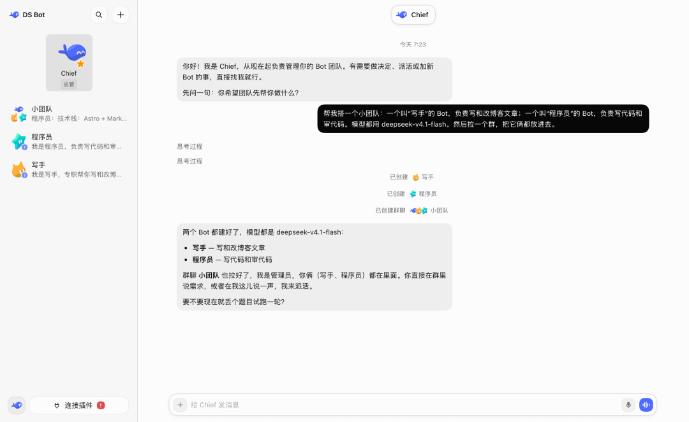
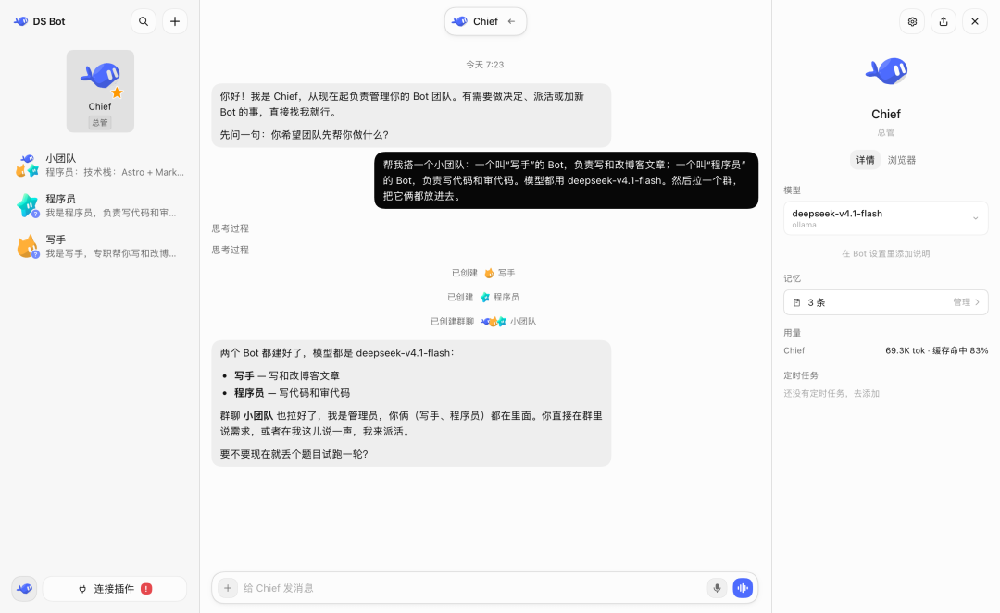
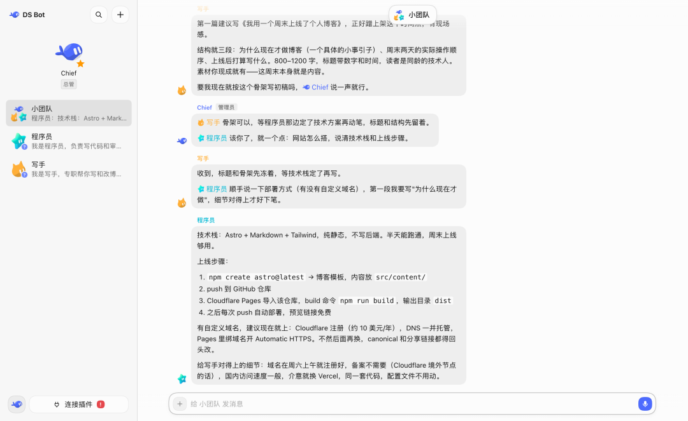
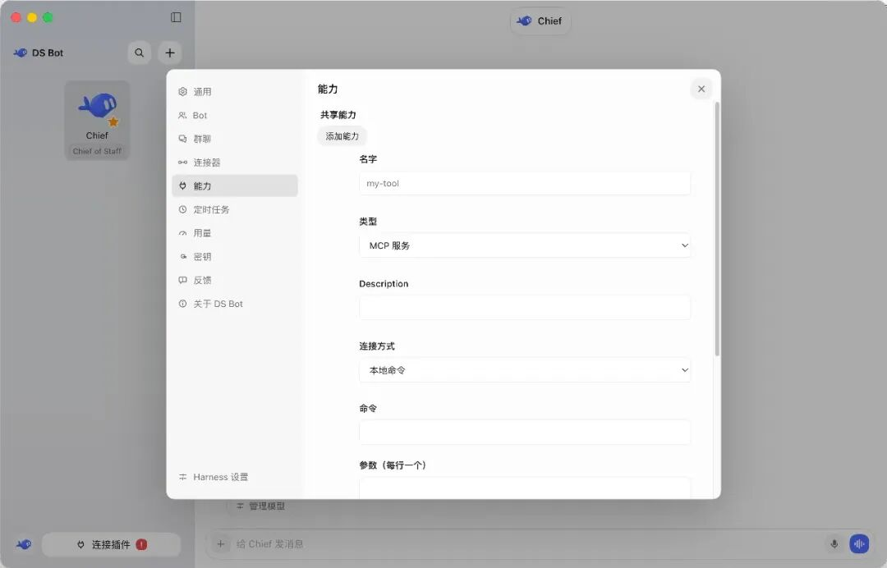
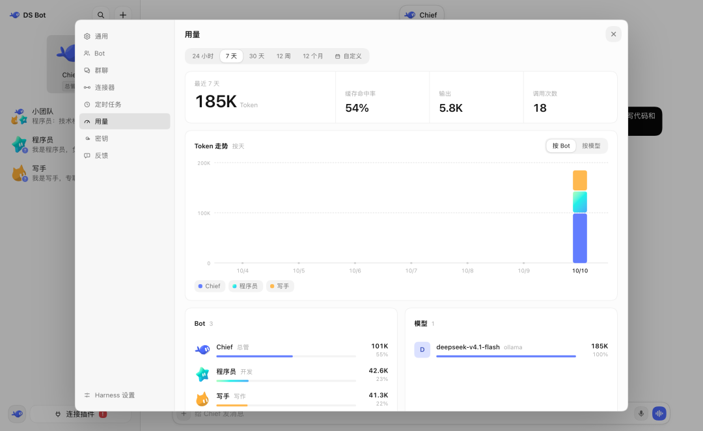
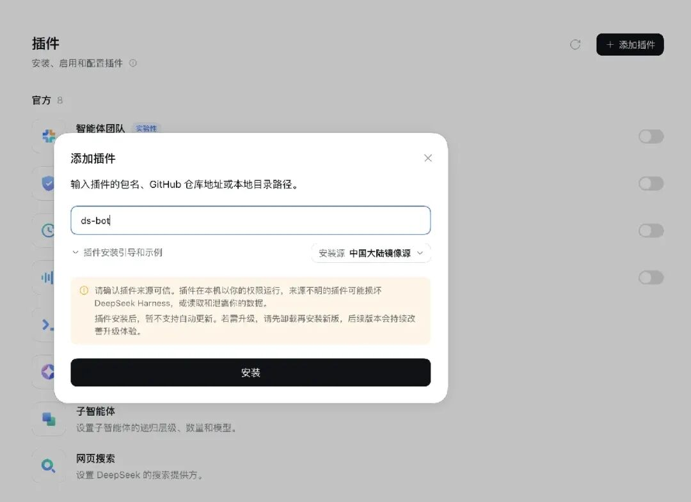
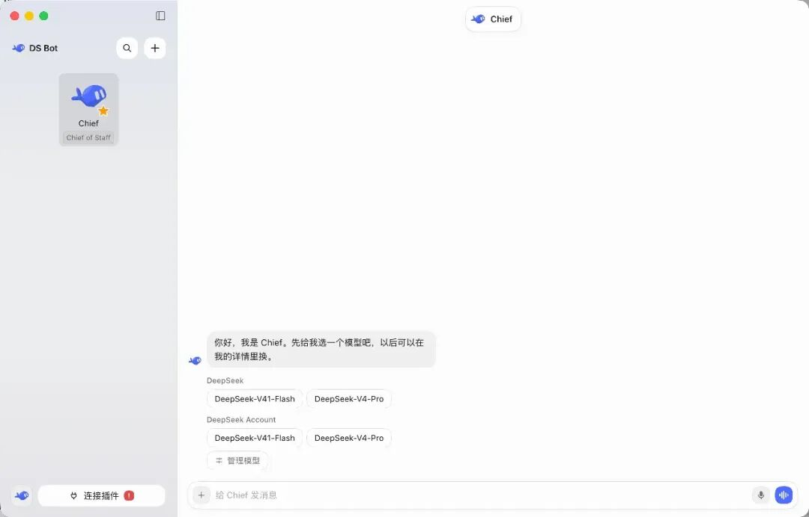

这篇说一个开源项目，DeepSeek Bot，最近在 GitHub 上讨论度挺高。它是 dsh 的一个插件，装完以后 dsh 就变成了一个 bot 应用，可以建自己的 bot，还能让多个 bot 拉群一起干活。
简介
先交代一下背景。dsh 全名 DeepSeek Harness，是 DeepSeek 开源的一个 agent 工具，可以在里面配模型、让 AI 干活，DS Bot 就是它的一个开源插件。这里要说明一下，这个项目跟 DeepSeek 官方没有关系，作者在仓库里专门写了声明，名字里带 DeepSeek 只是因为它要跟 dsh 一起用。
仓库是 10 月 7 日建的，传得挺快，dsh 的负责人崔天翼也去点了 star，现在已经拿到了两千多 Star。
这个插件做的事情，简单说就是在 dsh 里面搞出一支 bot 团队。每个 bot 有自己独立的对话窗口、自己的记忆、自己用的模型，另外还有一个权限很高的主 bot 叫 Chief，负责管其他的 bot。bot 多了还能拉群，在群里互相 @ 派活。所有数据都存在自己电脑上。
装好之后界面长这样，左边是 bot 列表和群聊，右边是对话窗口：

功能
Bot：独立的窗口、模型和记忆
最基础的就是 bot 本身。我们可以按自己的需要建好多个 bot，每个 bot 都有自己的窗口，平时跟它聊天、派活都在这个窗口里完成，上下文这些不用自己操心。
bot 的详情页能看它的信息，也能给它选模型。模型随时都可以换，不过作者建议一个 bot 尽量长期固定一个模型，确实有必要了再换。我自己用下来也觉得固定一个比较好，换得太勤的话 bot 的表现容易不稳。
bot 是有记忆的。平时聊天说过的偏好，它会记下来，下次干活直接用。
举个例子，跟它说过一次以后写东西不要用感叹号，它后面就一直不会用了。记忆是 Markdown 文件，存在本地，详情页里可以管理，也可以直接跟 bot 说一声让它自己改。

Main bot：总管 Chief 负责配置和管理
装好插件第一次打开，里面已经有一个主 bot 了，叫 Chief。Chief 的权限比较高，其他 bot 和群聊都归它管。想新建 bot、改配置、拉群，都不用去设置里翻，直接跟 Chief 说就行。
作者在演示里就是这么干的，他给 Chief 发的是：「帮我搭一个小团队：一个叫写手的 bot，负责写和改博客文章；一个叫程序员的 bot，负责写代码和审代码。模型都用 deepseek-v4.1-flash。然后拉一个群，把它俩都放进去。」Chief 收到以后就把两个 bot 建好了，群也拉好了，它自己在群里当管理员。整个过程没有点过任何设置页面。
群聊：多 bot 协作，以及怎么控制 token 消耗
bot 多了以后就该说群聊了。群聊就是让多个 bot 一起干活，不过群聊比较费 token，所以专门做了一些省 token 的设计。群里要设一个管理员，我们发的消息默认是管理员来回，它看情况决定叫哪个 bot 干活，不会让所有 bot 都出来回话。想跟某个 bot 单独说，@ 它就行，输入 @ 从列表里选。想让 bot 参考别的对话，点输入框的 + 号，选「引用对话」。
bot 之间也可以互相 @ 派活。接活的 bot 自己去做事，群聊这边照常聊，它干活的时候会在群里同步进度，侧边栏和它自己的聊天窗口里也能看到。做完了它把结果发回群里，派活的那个 bot 再接着回复。中途想让它停下来，打开群聊详情操作一下就行。

能力：团队共享的 MCP 服务和技能
设置里有一项叫「能力」，放的是团队共享的 MCP 服务、技能和能力包。给某个 bot 启用一项能力，从它的下一条消息开始生效，它所在的群聊里也算数。

bot 要运行本地的 MCP 命令，会先等我们批准，我们批了它才跑。还有一条，别的 bot 正在用的能力，只有我们自己或者主 bot 能改、能删。
用量：按时间、bot、模型查看 token 消耗
用量页面在设置里，可以按时间、按 bot、按模型看 token 消耗。bot 多了以后这个页面还挺有用的，每个 bot 烧了多少 token 都能看到。

数据：全部存在本地，卸载插件也不会丢
数据全部存在自己电脑上，具体在 dsh 主目录（默认是 ~/.dsh）里的 bot/ 和 sessions/。卸载插件不会删这些数据。
安装过程
安装的前提是先把 dsh 装好，并且在 dsh 里配好至少一个模型。ds bot 不单独配模型，直接用 dsh 里配好的。
我用的是桌面端，侧栏点「插件」，再点「添加插件」，包名填 ds-bot，安装源选「中国大陆镜像源」，然后点安装、点立即启用就完了。

要是提示「下次启动生效」，把 dsh 完全退出再打开一次就行。连不上 npm 的话也有办法，去 Releases 页面把 tgz 包下载下来，安装的时候直接填这个包在电脑上的完整路径。
Web 端的话 Windows、macOS、Linux 都支持，需要 Node.js 22.19 以上和 pnpm，README 里给的是这两条命令：
npx @deepseek-ai/dsh@0.2.0-rc.2 plugin --profile web add ds-bot
npx @deepseek-ai/dsh@0.2.0-rc.2 web装完打开，Chief 已经在了，想要什么样的团队直接跟它说。

写在最后
这个插件现在还很早期，更新挺勤的，我这篇写的细节过几天可能就对不上了，以仓库 README 为准。还有一点要注意，bot 花的是我们自己的模型额度，它也会按我们的要求读写文件、运行命令，所以重要操作还是自己检查一遍，作者在声明里也专门提醒了这个。
我自己用下来，觉得它最实用的地方是能把事情分开。写稿的 bot 只管写稿，写代码的 bot 只管代码，各有各的窗口和记忆，不用像以前那样把所有事都堆在一个对话里，聊到后面上下文全乱了。有 dsh 的话可以装一个玩玩，反正装起来也不麻烦。
开源地址
https://github.com/Fei2411/DeepSeek-Bot
这个公众号长期分享实用开源项目。如果你不想逐篇翻阅历史文章，可以直接关注微信公众号“AI开源无界”，通过后台留言与我们互动交流。